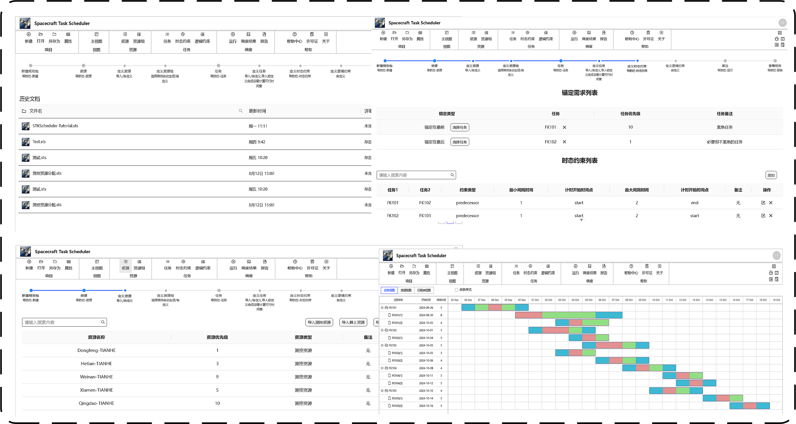
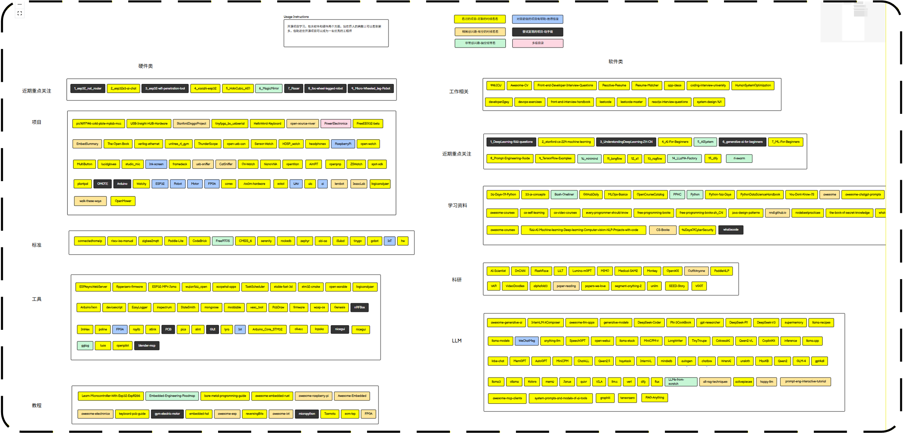

张建
求职意向：AI产品经理/前端开发工程师/全栈开发工程师
求职意向：AI产品经理/前端开发工程师/全栈开发工程师
2024.9 - 至今
主修课程：智能计算系统、机器人导论、现代最优化理论与方法等
2019.9 - 2024.6
主修课程：模式识别、计算机网络、数据结构、C语言、自动控制原理、电力拖动、电力电子技术、模电、数电等
2022.9 - 至今
为满足个人学习复盘、对外交流分享需求，结合 ROADMAP 开源工具与飞书，系统汇总分类整理了值得深入学习与借鉴的开源项目，形成结构化导航体系。
2024.5 - 至今
研发通用调度分析工具软件，为复杂航天任务提供全流程支持
2025.4 - 2025.6
基于LLama-Factory框架在华科高性能计算平台进行大模型微调；进行Agent规划技术相关的科研探索。

